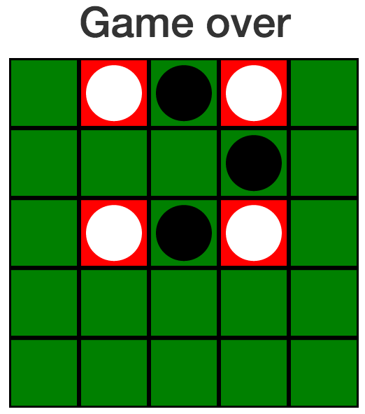
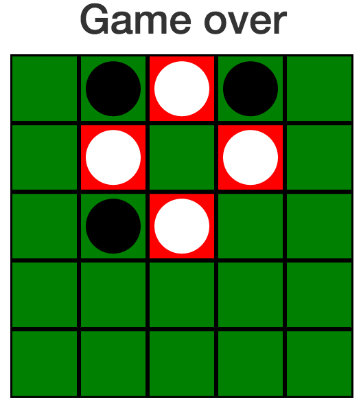
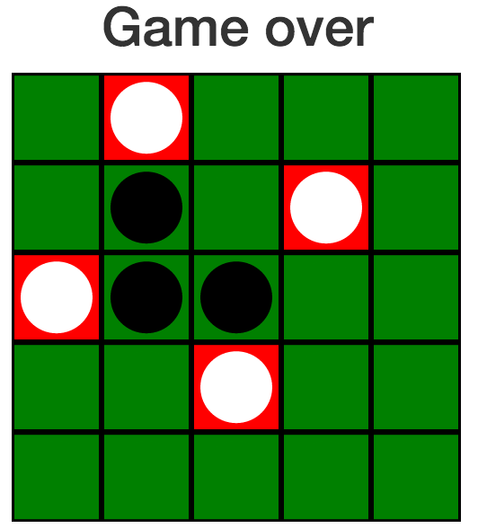
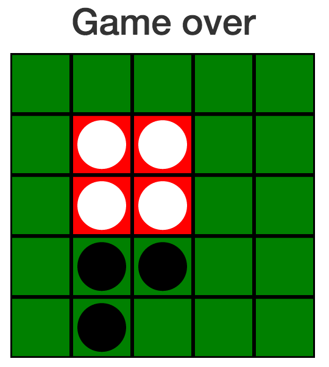

Corners Explaination
- Game
- Explanation
How to play this game:
The goal of the game is to form the corners of a square. This
square can be along the standard grid,such as the following,
made by white

or the square can tilted like one of the following.


Players alternate turns placing down pieces until one of them
successfully forms a square.
Settings:
Board and Dimensions
The "new board" button will generate a new board with the selected
dimension. The undo button will undo the last move that was
made.
Minimum Square Size
This option controls how large a square has to be for it to
count as forming a square.
The "not all touching" option is the default, doesn't count
squares where all corners are adjacent like the following

The "not touching" option doesn't count a square in which
any corners touch. This prevents the square above
from counting, and prevents the following from counting as well.
The final option is "any size". This option counts a square
of any size. All of the above options are implemented after
board has been refreshed by pressing the "new board" button.
Checkable options
There are two options that can be checked on and off, show move
numbers, and show forced squares. Turning on show move numbers
labels every piece with the order in which it was placed down,
and turning on show forced squares shows when a player could
complete a square by moving at a location.
Who made this game:
This game was invented by Professor Marc Chamberland of Grinnell
College, and implemented by Reilly Grant.